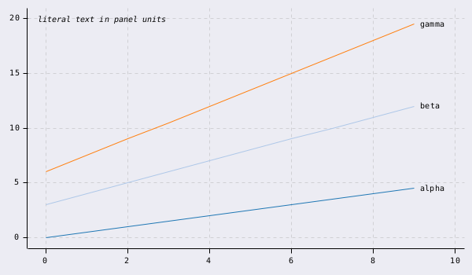
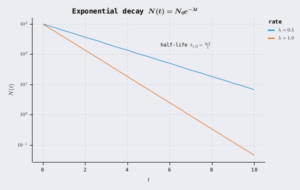
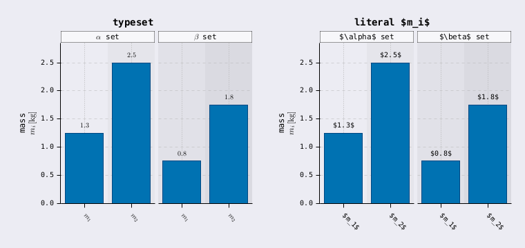
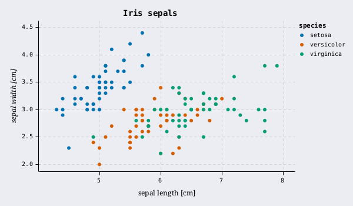

8 Labels and text
A plot has a title, axis titles and legend titles (:labels), each a string or a label map with its own text style. Text drawn by charts (the text chart, value labels, strip and legend texts) takes its style from a theme text role.
(ns reference.labels-text
(:require [fastmath.core :as m]
[cljplot2.chart :as chart]
[cljplot2.content.label :as label]
[cljplot2.core :as plot]
[cljplot2.describe :as describe]
[cljplot2.graphics.font :as font]
[cljplot2.layout.plot-grid :as plot-grid]
[notebook-utils :as nu]))The table below holds the iris flowers; most sections draw them:
Data: Edgar Anderson’s iris measurements, R datasets package iris (Anderson 1935; Fisher 1936); licence: Part of R (GPL-2 | GPL-3).
(def iris (nu/dataset :iris))| sepal-length | sepal-width | petal-length | petal-width | species |
|---|---|---|---|---|
| 5.1 | 3.5 | 1.4 | 0.2 | setosa |
| 4.9 | 3 | 1.4 | 0.2 | setosa |
| 4.7 | 3.2 | 1.3 | 0.2 | setosa |
| 4.6 | 3.1 | 1.5 | 0.2 | setosa |
| 5 | 3.6 | 1.4 | 0.2 | setosa |
| 5.4 | 3.9 | 1.7 | 0.4 | setosa |
| 4.6 | 3.4 | 1.4 | 0.3 | setosa |
| 5 | 3.4 | 1.5 | 0.2 | setosa |
| 4.4 | 2.9 | 1.4 | 0.2 | setosa |
| 4.9 | 3.1 | 1.5 | 0.1 | setosa |
| 5.4 | 3.7 | 1.5 | 0.2 | setosa |
| 4.8 | 3.4 | 1.6 | 0.2 | setosa |
| 4.8 | 3 | 1.4 | 0.1 | setosa |
| 4.3 | 3 | 1.1 | 0.1 | setosa |
| 5.8 | 4 | 1.2 | 0.2 | setosa |
| 5.7 | 4.4 | 1.5 | 0.4 | setosa |
| 5.4 | 3.9 | 1.3 | 0.4 | setosa |
| 5.1 | 3.5 | 1.4 | 0.3 | setosa |
| 5.7 | 3.8 | 1.7 | 0.3 | setosa |
| 5.1 | 3.8 | 1.5 | 0.3 | setosa |
| 5.4 | 3.4 | 1.7 | 0.2 | setosa |
| 5.1 | 3.7 | 1.5 | 0.4 | setosa |
| 4.6 | 3.6 | 1 | 0.2 | setosa |
| 5.1 | 3.3 | 1.7 | 0.5 | setosa |
| 4.8 | 3.4 | 1.9 | 0.2 | setosa |
| 5 | 3 | 1.6 | 0.2 | setosa |
| 5 | 3.4 | 1.6 | 0.4 | setosa |
| 5.2 | 3.5 | 1.5 | 0.2 | setosa |
| 5.2 | 3.4 | 1.4 | 0.2 | setosa |
| 4.7 | 3.2 | 1.6 | 0.2 | setosa |
| 4.8 | 3.1 | 1.6 | 0.2 | setosa |
| 5.4 | 3.4 | 1.5 | 0.4 | setosa |
| 5.2 | 4.1 | 1.5 | 0.1 | setosa |
| 5.5 | 4.2 | 1.4 | 0.2 | setosa |
| 4.9 | 3.1 | 1.5 | 0.2 | setosa |
| 5 | 3.2 | 1.2 | 0.2 | setosa |
| 5.5 | 3.5 | 1.3 | 0.2 | setosa |
| 4.9 | 3.6 | 1.4 | 0.1 | setosa |
| 4.4 | 3 | 1.3 | 0.2 | setosa |
| 5.1 | 3.4 | 1.5 | 0.2 | setosa |
| 5 | 3.5 | 1.3 | 0.3 | setosa |
| 4.5 | 2.3 | 1.3 | 0.3 | setosa |
| 4.4 | 3.2 | 1.3 | 0.2 | setosa |
| 5 | 3.5 | 1.6 | 0.6 | setosa |
| 5.1 | 3.8 | 1.9 | 0.4 | setosa |
| 4.8 | 3 | 1.4 | 0.3 | setosa |
| 5.1 | 3.8 | 1.6 | 0.2 | setosa |
| 4.6 | 3.2 | 1.4 | 0.2 | setosa |
| 5.3 | 3.7 | 1.5 | 0.2 | setosa |
| 5 | 3.3 | 1.4 | 0.2 | setosa |
| 7 | 3.2 | 4.7 | 1.4 | versicolor |
| 6.4 | 3.2 | 4.5 | 1.5 | versicolor |
| 6.9 | 3.1 | 4.9 | 1.5 | versicolor |
| 5.5 | 2.3 | 4 | 1.3 | versicolor |
| 6.5 | 2.8 | 4.6 | 1.5 | versicolor |
| 5.7 | 2.8 | 4.5 | 1.3 | versicolor |
| 6.3 | 3.3 | 4.7 | 1.6 | versicolor |
| 4.9 | 2.4 | 3.3 | 1 | versicolor |
| 6.6 | 2.9 | 4.6 | 1.3 | versicolor |
| 5.2 | 2.7 | 3.9 | 1.4 | versicolor |
| 5 | 2 | 3.5 | 1 | versicolor |
| 5.9 | 3 | 4.2 | 1.5 | versicolor |
| 6 | 2.2 | 4 | 1 | versicolor |
| 6.1 | 2.9 | 4.7 | 1.4 | versicolor |
| 5.6 | 2.9 | 3.6 | 1.3 | versicolor |
| 6.7 | 3.1 | 4.4 | 1.4 | versicolor |
| 5.6 | 3 | 4.5 | 1.5 | versicolor |
| 5.8 | 2.7 | 4.1 | 1 | versicolor |
| 6.2 | 2.2 | 4.5 | 1.5 | versicolor |
| 5.6 | 2.5 | 3.9 | 1.1 | versicolor |
| 5.9 | 3.2 | 4.8 | 1.8 | versicolor |
| 6.1 | 2.8 | 4 | 1.3 | versicolor |
| 6.3 | 2.5 | 4.9 | 1.5 | versicolor |
| 6.1 | 2.8 | 4.7 | 1.2 | versicolor |
| 6.4 | 2.9 | 4.3 | 1.3 | versicolor |
| 6.6 | 3 | 4.4 | 1.4 | versicolor |
| 6.8 | 2.8 | 4.8 | 1.4 | versicolor |
| 6.7 | 3 | 5 | 1.7 | versicolor |
| 6 | 2.9 | 4.5 | 1.5 | versicolor |
| 5.7 | 2.6 | 3.5 | 1 | versicolor |
| 5.5 | 2.4 | 3.8 | 1.1 | versicolor |
| 5.5 | 2.4 | 3.7 | 1 | versicolor |
| 5.8 | 2.7 | 3.9 | 1.2 | versicolor |
| 6 | 2.7 | 5.1 | 1.6 | versicolor |
| 5.4 | 3 | 4.5 | 1.5 | versicolor |
| 6 | 3.4 | 4.5 | 1.6 | versicolor |
| 6.7 | 3.1 | 4.7 | 1.5 | versicolor |
| 6.3 | 2.3 | 4.4 | 1.3 | versicolor |
| 5.6 | 3 | 4.1 | 1.3 | versicolor |
| 5.5 | 2.5 | 4 | 1.3 | versicolor |
| 5.5 | 2.6 | 4.4 | 1.2 | versicolor |
| 6.1 | 3 | 4.6 | 1.4 | versicolor |
| 5.8 | 2.6 | 4 | 1.2 | versicolor |
| 5 | 2.3 | 3.3 | 1 | versicolor |
| 5.6 | 2.7 | 4.2 | 1.3 | versicolor |
| 5.7 | 3 | 4.2 | 1.2 | versicolor |
| 5.7 | 2.9 | 4.2 | 1.3 | versicolor |
| 6.2 | 2.9 | 4.3 | 1.3 | versicolor |
| 5.1 | 2.5 | 3 | 1.1 | versicolor |
| 5.7 | 2.8 | 4.1 | 1.3 | versicolor |
| … | … | … | … | … |
The table below holds three made-up series; the section on text in the panel draws them:
(def series (for [[i g] (map-indexed vector ["alpha" "beta" "gamma"]) t (range 10)]
{:g g :t t :v (+ (* t (inc i) 0.5) (* 3 i))}))| g | t | v |
|---|---|---|
| alpha | 0 | 0.0 |
| alpha | 1 | 0.5 |
| alpha | 2 | 1.0 |
| alpha | 3 | 1.5 |
| alpha | 4 | 2.0 |
| alpha | 5 | 2.5 |
| alpha | 6 | 3.0 |
| alpha | 7 | 3.5 |
| alpha | 8 | 4.0 |
| alpha | 9 | 4.5 |
| beta | 0 | 3.0 |
| beta | 1 | 4.0 |
| beta | 2 | 5.0 |
| beta | 3 | 6.0 |
| beta | 4 | 7.0 |
| beta | 5 | 8.0 |
| beta | 6 | 9.0 |
| beta | 7 | 10.0 |
| beta | 8 | 11.0 |
| beta | 9 | 12.0 |
| gamma | 0 | 6.0 |
| gamma | 1 | 7.5 |
| gamma | 2 | 9.0 |
| gamma | 3 | 10.5 |
| gamma | 4 | 12.0 |
| gamma | 5 | 13.5 |
| gamma | 6 | 15.0 |
| gamma | 7 | 16.5 |
| gamma | 8 | 18.0 |
| gamma | 9 | 19.5 |
The table below holds made-up decays at two rates, the rates named by formulas; the formula section draws them:
(def decay
(vec (for [rate [0.5 1.0] t (range 0.0 10.5 0.5)]
{:t t :n (* 1000.0 (m/exp (- (* rate t)))) :rate (str "$\\lambda = " rate "$")})))| t | n | rate |
|---|---|---|
| 0.0 | 1000.0 | $\lambda = 0.5$ |
| 0.5 | 778.8007830714049 | $\lambda = 0.5$ |
| 1.0 | 606.5306597126335 | $\lambda = 0.5$ |
| 1.5 | 472.3665527410147 | $\lambda = 0.5$ |
| 2.0 | 367.87944117144235 | $\lambda = 0.5$ |
| 2.5 | 286.5047968601901 | $\lambda = 0.5$ |
| 3.0 | 223.13016014842984 | $\lambda = 0.5$ |
| 3.5 | 173.77394345044513 | $\lambda = 0.5$ |
| 4.0 | 135.3352832366127 | $\lambda = 0.5$ |
| 4.5 | 105.39922456186434 | $\lambda = 0.5$ |
| 5.0 | 82.0849986238988 | $\lambda = 0.5$ |
| 5.5 | 63.92786120670757 | $\lambda = 0.5$ |
| 6.0 | 49.787068367863945 | $\lambda = 0.5$ |
| 6.5 | 38.77420783172201 | $\lambda = 0.5$ |
| 7.0 | 30.197383422318502 | $\lambda = 0.5$ |
| 7.5 | 23.517745856009107 | $\lambda = 0.5$ |
| 8.0 | 18.315638888734178 | $\lambda = 0.5$ |
| 8.5 | 14.264233908999254 | $\lambda = 0.5$ |
| 9.0 | 11.108996538242305 | $\lambda = 0.5$ |
| 9.5 | 8.651695203120632 | $\lambda = 0.5$ |
| 10.0 | 6.737946999085467 | $\lambda = 0.5$ |
| 0.0 | 1000.0 | $\lambda = 1.0$ |
| 0.5 | 606.5306597126335 | $\lambda = 1.0$ |
| 1.0 | 367.87944117144235 | $\lambda = 1.0$ |
| 1.5 | 223.13016014842984 | $\lambda = 1.0$ |
| 2.0 | 135.3352832366127 | $\lambda = 1.0$ |
| 2.5 | 82.0849986238988 | $\lambda = 1.0$ |
| 3.0 | 49.787068367863945 | $\lambda = 1.0$ |
| 3.5 | 30.197383422318502 | $\lambda = 1.0$ |
| 4.0 | 18.315638888734178 | $\lambda = 1.0$ |
| 4.5 | 11.108996538242305 | $\lambda = 1.0$ |
| 5.0 | 6.737946999085467 | $\lambda = 1.0$ |
| 5.5 | 4.0867714384640665 | $\lambda = 1.0$ |
| 6.0 | 2.4787521766663585 | $\lambda = 1.0$ |
| 6.5 | 1.5034391929775726 | $\lambda = 1.0$ |
| 7.0 | 0.9118819655545163 | $\lambda = 1.0$ |
| 7.5 | 0.5530843701478336 | $\lambda = 1.0$ |
| 8.0 | 0.33546262790251186 | $\lambda = 1.0$ |
| 8.5 | 0.2034683690106442 | $\lambda = 1.0$ |
| 9.0 | 0.12340980408667956 | $\lambda = 1.0$ |
| 9.5 | 0.0748518298877006 | $\lambda = 1.0$ |
| 10.0 | 0.045399929762484845 | $\lambda = 1.0$ |
The table below holds made-up masses whose names hold formulas; the formula section draws them:
(def masses
[{:part "$m_1$" :group "$\\alpha$ set" :kg 1.25} {:part "$m_2$" :group "$\\alpha$ set" :kg 2.5}
{:part "$m_1$" :group "$\\beta$ set" :kg 0.75} {:part "$m_2$" :group "$\\beta$ set" :kg 1.75}])| part | group | kg |
|---|---|---|
| $m_1$ | $\alpha$ set | 1.25 |
| $m_2$ | $\alpha$ set | 2.5 |
| $m_1$ | $\beta$ set | 0.75 |
| $m_2$ | $\beta$ set | 1.75 |
8.1 Plot labels
These keys of the plot’s :labels map hold the plot title, the axis titles and the legend titles. A 3D plot draws :x, :y and :z on its frame. An axis without a label takes the title a chart suggests, else the name of the column its mapping names by a keyword, left out when the plot is too small for it; :none hides it. The plot below names the title and both axes:
(plot/render-image {:data iris
:mapping {:x :sepal-length :y :sepal-width :color :species}
:charts [(chart/scatter)]
:labels {:title "Iris sepals" :x "sepal length [cm]" :y "sepal width [cm]"}}
{:width 600 :height 350})
The plot below titles the colour legend over its scale’s :title and gives the size legend a label map with its own role:
(plot/render-image {:data iris
:mapping {:x :sepal-length :y :sepal-width :color :species :size :petal-width}
:charts [(chart/scatter)]
:scales {:color {:title "ignored"}}
:labels {:color "Species" :size {:text "petal width [cm]" :role :axis-title}}}
{:width 600 :height 350})
8.2 Label maps
A label is a string or a label map. These keys of a label map give its text, its rotation and the theme text role it takes its style from; a label in a custom grid (Facets, multiplots and margins) must name its role. In the plot below the y title is horizontal and styled as a tick label:
(plot/render-image {:data iris
:mapping {:x :petal-length :y :petal-width}
:charts [(chart/scatter)]
:labels {:x {:text "petal length\n[cm]"}
:y {:text "petal\nwidth" :rotation 0 :role :tick-label}}}
{:width 600 :height 350})
8.3 Label style
The keys of the Text style group in a label map override its role’s style for this label only:
(plot/render-image {:data iris
:mapping {:x :sepal-length :y :sepal-width :color :species}
:charts [(chart/scatter)]
:labels {:title {:text "Iris sepals" :size 18 :align [:left :middle] :color [40 40 120]
:background [230 230 245] :inset 6}
:y {:text "sepal width [cm]" :font-style :italic}}}
{:width 600 :height 350})
8.4 Long axis titles
An axis title longer than its panels - the width under them, the height beside them; one title spans all facet panels - is fitted to them: wrapped at word boundaries (a line into at most three, the title’s row or column grows), then drawn smaller down to the :axis-title text role’s :min-size (8 points by default, theme [:text :axis-title :min-size] - every text role takes one, see the Theme chapter), then cut with an ellipsis. Line breaks you give are kept, and a title that fits is drawn as given. Fitting is always on: earlier versions clipped such titles. A title rotated across its own track (a y title with :rotation 0) isn’t fitted.
Wrapped titles beside a small panel; on the right a word too long for the panel shrinks to the least size and is cut (:min-size 10):
(plot/render-image (plot/arrange [{:data iris
:mapping {:x :sepal-length :y :sepal-width}
:charts [(chart/scatter)]
:labels {:title "wrapped"
:x "sepal length of the iris flowers, measured in centimetres"
:y "sepal width of the flowers in centimetres"}}
{:data iris
:mapping {:x :sepal-length :y :sepal-width}
:charts [(chart/scatter)]
:labels {:title "shrunk and cut"
:x "sepal_length_in_centimetres_of_the_flowers_of_three_iris_species"
:y "sepal width"}
:theme {:text {:axis-title {:min-size 10}}}}]
{:columns 2})
{:width 700 :height 300})
8.5 Text in the panel
The text chart writes literal text or a mapped :label; :anchor, :offset and :rotation place it, :select :last labels the end of each group (e.g. line ends). Its full table is on the chart’s page (text). The plot below labels each line’s end and writes a note in panel units:
(plot/render-image {:data series
:mapping {:x :t :y :v :color :g}
:charts [(chart/line)
(chart/text {:mapping {:x :t :y :v :label :g} :select :last :anchor [:left :middle]})
(chart/text {:x [:panel 0.02] :y [:panel 0.95] :text "literal text in panel units"
:anchor [:left :middle] :font-style :italic})]
:legend false}
{:width 600 :height 350})
8.6 Formulas
Any text can hold LaTeX formulas, typeset at the text’s size and colour (bold in a bold role): plot/math is one formula, plot/runs puts text and formulas on one baseline, and in strings $...$ is a formula. The scale formatter :power-math writes log ticks as typeset powers.
The plot below puts formulas in the title, the axis titles, the tick labels, the legend and a text chart:
(plot/render-image {:data decay
:mapping {:x :t :y :n :color :rate}
:charts [(chart/line)
(chart/text {:x 5.5 :y 200.0 :anchor [:left :middle]
:text (plot/runs "half-life " (plot/math "t_{1/2} = \\frac{\\ln 2}{\\lambda}"))})]
:scales {:y {:kind :log :formatter :power-math}}
:labels {:title (plot/runs "Exponential decay " (plot/math "N(t) = N_0 e^{-\\lambda t}"))
:x (plot/math "t")
:y (plot/math "N(t)")}}
{:width 600 :height 380})
A dollar pair has no space inside and its closing dollar isn’t followed by a digit, so cost $5 to $10 stays text; \$ is always a literal dollar. :dollar-math false (a text role, a label map or a text chart) keeps every dollar literal, as on the right - strips, value labels, a rotated two-line title and turned tick labels:
(let [masses-plot (fn [title theme]
{:data masses
:mapping {:x :part :y :kg :facet-col :group}
:charts [(chart/bar {:value-label true :value-format "$%.1f$"})]
:labels {:title title :y (plot/runs "mass\n" (plot/math "m_i\\,[\\mathrm{kg}]"))}
:theme (merge {:axis {:x {:label-rotation 45}}} theme)})]
(plot/render-image (plot/arrange [(masses-plot "typeset" nil)
(masses-plot {:text "literal $m_i$" :dollar-math false}
{:text {:strip {:dollar-math false} :tick-label {:dollar-math false}
:bar-value {:dollar-math false}}})]
{:columns 2})
{:width 760 :height 360}))
8.7 Fonts
font/resolve-font turns a family name, a style (:plain, :bold, :italic, :bold-italic) and a size in points into the java.awt.Font drawn; use it to see which font a name gives or to hand a text style a font object, since a style’s :font takes a family name or a java.awt.Font. Bundled families ("DejaVu Sans Mono" - the default theme’s font, "Noto Emoji") win over installed ones, so plots render alike on every platform; installed and logical families ("Serif", "SansSerif" …) work too, an unknown name throws {:key :font}.
font– A bundled font family name as written, an installed or logical (SansSerif) family name in any case, or ajava.awt.Font, whose size and style are replaced.font-style– A font style::plain,:bold,:italicor:bold-italic.size– The size in points, a positive number.
java.awt.Font.(font/resolve-font "DejaVu Sans Mono" :bold 14)#object[java.awt.Font 0x29fc995c "java.awt.Font[family=DejaVu Sans Mono,name=DejaVu Sans Mono Bold,style=plain,size=14]"](font/resolve-font "Serif" :italic 12)#object[java.awt.Font 0x45eabcfe "java.awt.Font[family=Serif,name=Serif,style=italic,size=12]"]A resolved font (here a bundled bold face) in a label, and a logical family by name for the axis titles:
(plot/render-image {:data iris
:mapping {:x :sepal-length :y :sepal-width :color :species}
:charts [(chart/scatter)]
:labels {:title {:text "Iris sepals" :font (font/resolve-font "DejaVu Sans Mono" :bold 18)}
:x {:text "sepal length [cm]" :font "Serif"}
:y {:text "sepal width [cm]" :font "Serif" :font-style :italic}}}
{:width 600 :height 350})
source: notebooks/reference/labels_text.clj